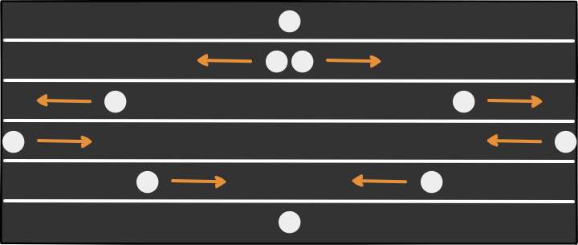

The objective of this assignment is to replicate the experiments of Watanabe et al. (2001), altering some factors to document the results and explain how are these new factors related to the cross-modal perception. In the original paper it was shown that a brief sound reproduced at the moment the targets collide, increases the relative frequency of perception of a bounce.
In the present assignment we show how the kind of sound played when the targets collide affects the bounce-induction effect, changing this sound from the original "crack" to a "whoosh" (See the audio examples below). As the nature of this "whoosh" is not related to a collision, playing it at the exact moment when the dots collide may not be convenient to test the full potential of this factor. Because of this, a further research has been done about the timing in which the new sound is played.
A total of 4 experiments have been realised in order to see the repercussions of the new sound:
The group of observers is composed of five people with an age that varies between the 20 and the 23 years. All of them were naive about the purpose that motivated the experiments and have a normal or corrected-to-normal vision and hearing.
Visual stimuli was displayed on the screen (60Hz) of a Toshiba laptop model C50-A-1GU (complete specifications in here) in a room with the light off. The audio stimuli was composed of the two sounds described previously (i.e. "crack" and "whoosh") and the integrated speakers of the laptop were used to play both sounds. A full report of the design of the graphical interface (GUI) used in the experiments can be found in the section 2. DESIGN of this website.
Besides the controls that compose the GUI, the visual stimuli, displayed on the screen at 100fps, was composed of two white disks of 20 pixels (called "dots" onwards), both placed in the exact centre of the screen at the start of the experiment. Immediately after the onset, one dot starts moving horizontally in a straight line towards the east side of the window, while the other dot does the same towards the west side. The speed of both dots is the same, 5 pixels per frame, and it will be constant during the whole experiment.
 Trajectory of the dots across the screenOnce the dots have reached the border of the window, they will "bounce" on this edge, changing their direction 180 degrees. Moving now towards each other, they will go back to their initial position when they collide in the centre of the screen.
Observers viewed the display from an approximate distance of 1 meter and reported their perception (i.e. streaming or bouncing) either by using the mouse to press the buttons that are shown on the screen or by pressing the keys ← or → of the keyboard, which have the same effect.